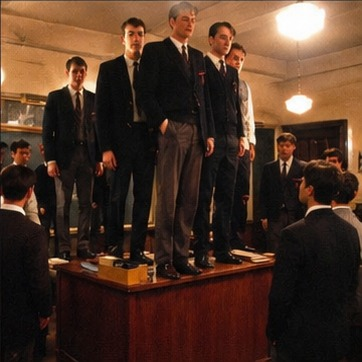

Dead Poets Society
Released in 1989

Carpe Diem — Seize the Day!
Dead Poets Society is a 1989 movie about an English teacher who inspires his students to love poetry, think independently, and seize the day.
About the Movie
Dead Poets Society tells the story of students attending a strict and traditional boarding school called Welton Academy.
Their lives begin to change when a new English teacher, John Keating, introduces them to poetry and encourages them to think differently.
Through his unique teaching methods, he teaches his students to follow their passions, express themselves, and make the most of their lives.
The Main Message
The central message of the movie is “Carpe Diem”, a Latin phrase meaning “Seize the Day”. It encourages people to make their lives meaningful and follow their dreams.
My Favourite Movie Scenes
These are some of my favourite moments from Dead Poets Society, along with my personal ratings.
| Movie Scenes | Rating |
|---|---|
| O Captain! My Captain! Scene | 10 / 10 |
| Carpe Diem Lesson | 9.5 / 10 |
| Ripping the Textbook | 9 / 10 |
Explore More
Discover the inspiring characters and memorable moments of Dead Poets Society.
Meet the CharactersExplore Movie Gallery